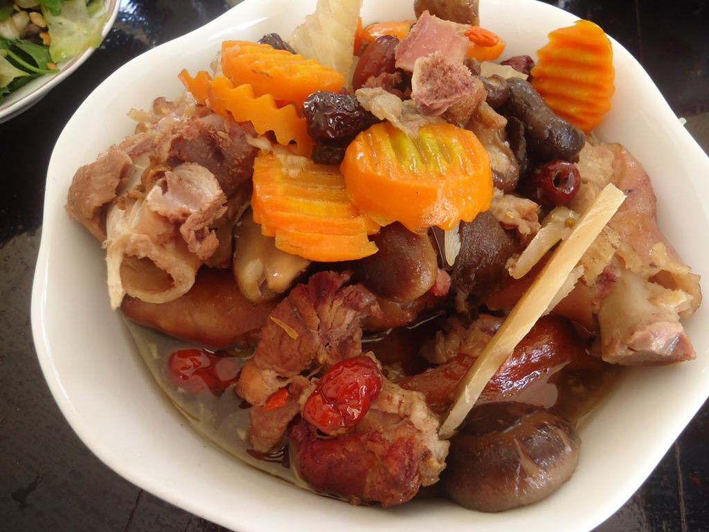

Cùng bắt tay làm thử thôi nào!
Nguyên liệu :
- Chân giò heo (đã quay sẵn): 1kg.
- Một gói thuốc bắc (bên trong phải có: Táo tàu, hoài sơn, cao kỷ tử, hạt sen, thục địa, kim châm, nhãn nhục).
- Một củ sắn, một củ cà rốt.
- Nấm đông cô: 50 gam.
- Một trái dừa Xiêm (lấy nước).
- Gia vị: Muối, bột ngọt, nước mắm.
Cách làm
- Chân giò: Các bạn chặt miếng vừa ăn.
- Nấm đông cô: Ngâm nở vừa, sau đó rửa sạch lại, để ráo, cắt miếng vừa ăn.
- Cà rốt, củ sắn: Gọt vỏ, rửa sạch, cắt miếng vừa ăn.
- Đặt nồi lên bếp cùng với một ít nước dừa Xiêm và một lít nước. Tiếp theo, các bạn đổ gói thuốc bắc vào, đun lửa vừa.
- Đun đến khi nước có màu nâu đỏ, các bạn cho tiếp thịt chân giò vào hầm cùng với một ít muối và bột ngọt, đun lửa nhỏ.
- Khi nào các bạn thấy thịt mềm thì cho thêm nấm đông cô, cà rốt, sắn vào và tiếp tục đun đến khi tất cả đều chín mềm, nêm nếm lại thêm ít nước mắm cho vừa miệng là xong.
Món thịt chân giò hầm thuốc bắc với từng miếng thịt mềm mềm, đậm đà lại thơm thơm mùi của thảo dược nên chắc chắn ai cũng thích. Đặc biệt là những người đã lớn tuổi răng không còn tốt thì sẽ cực ưa chuộng món này hơn.
Chúc các bạn thành công với cách làm chân giò hầm thuốc bắc của mình và có một bữa ăn ngon miệng bên người thân!